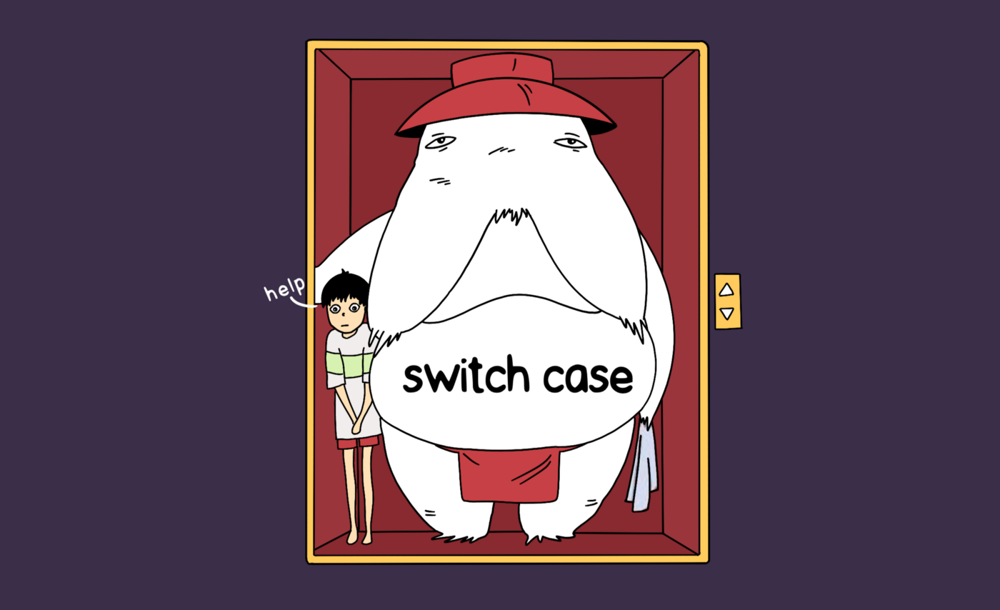

Avoid switch case for ENUMs – Visitor pattern
·
Java Lava·
#Design Patterns
#Java 2 min read
2 min read

Don’t force-fit the switch-case (Spirited Away)
Even before going ahead with an example, what is Visitor Pattern? Here is the Wikipedia definition.
Let’s take a typical example for a Switch case for an ENUM: Consider the ENUM, Country:
public enum Country {
CHINA,
INDIA,
UNITED_STATES,
BRAZIL,
MEXICO,
GERMANY
}
Write a function which takes the ENUM Country as the input and returns the happiness score
public float getHappinessScore(Country country) {
float happinessScore;
switch (country) {
case CHINA:
happinessScore = 5.19;
break;
case INDIA:
happinessScore = 4.01;
break;
case UNITED_STATES:
happinessScore = 6.89;
break;
case BRAZIL:
happinessScore = 6.30;
break;
case MEXICO:
happinessScore = 6.59;
break;
case GERMANY:
happinessScore = 6.98;
break;
default:
// Throw an exception
}
return happinessScore;
}
Don’t worry about the accuracy of these scores, Now, what is the problem with this approach? In every single place where we’ve to take an action based on the country, we end up writing the switch case again and again, which comes down to the developer to ensure no Country is missed.
- Code would look ugly because of the duplication of the Switch case every where.
- High possibilities of human error.
- Incase of addition of a new country, the developer should further ensure all switch cases are updated by manually searching for it (As that would not result in any sort of compilation error).
Using the Visitor pattern:
public enum Country {
CHINA {
@Override
public <T, J> T accept(CountryVisitor<T, J> visitor, J data) {
return visitor.visitChina(data);
}
},
INDIA {
@Override
public <T, J> T accept(CountryVisitor<T, J> visitor, J data) {
return visitor.visitIndia(data);
}
},
UNOTED_STATES {
@Override
public <T, J> T accept(CountryVisitor<T, J> visitor, J data) {
return visitor.visitUnitedStates(data);
}
},
BRAZIL {
@Override
public <T, J> T accept(CountryVisitor<T, J> visitor, J data) {
return visitor.visitBrazil(data);
}
},
MEXICO {
@Override
public <T, J> T accept(CountryVisitor<T, J> visitor, J data) {
return visitor.visitMexico(data);
}
},
GERMANY {
@Override
public <T, J> T accept(CountryVisitor<T, J> visitor, J data) {
return visitor.visitGermany(data);
}
}
};
public abstract <T, J> T accept(CountryVisitor<T, J> visitor, J data);
public interface CountryVisitor<T, J> {
T visitChina(J data);
T visitIndia(J data);
T visitUnitedStates(J data);
T visitBrazil(J data);
T visitMexico(J data);
T visitGermany(J data);
}
Usage of the CountryVisitor
public class HappinessScoreCountryVisitor implements CountryVisitor<OutputDto, InputDto> {
public OutputDto process(final Country country, final InputDto data) {
country.accept(this, data);
}
// Implement all the methods and write the logic for each of the method
@Override
public OutputDto visitChina(InputDto data) {
OutputDto output;
// Logic here
return output;
}
@Override
public OutputDto visitIndia(InputDto data) {
OutputDto output;
// Logic here
return output;
}
@Override
public OutputDto visitUnitedStates(InputDto data) {
OutputDto output;
// Logic here
return output;
}
@Override
public OutputDto visitBrazil(InputDto data) {
OutputDto output;
// Logic here
return output;
}
@Override
public OutputDto visitMexico(InputDto data) {
OutputDto output;
// Logic here
return output;
}
@Override
public OutputDto visitGermany(InputDto data) {
OutputDto output;
// Logic here
return output;
}
}
Now, the getHappinessScore method would look like:
public float getHappinessScore(Country country) {
InputDto input;
/* Usually there would be an Input, incase Input is not require
Write the visitor interface accordingly */
return happinessScoreCountryVisitor.process(country, input);
}
As compared to disadvantages with switch-case
- Code would look a lot more cleaner.
- Possibilities of human error is almost NIL.
- Incase of addition of a new country, the developer will have to implement in all the Visitor implementations, as it would result in a compilation error.
Warning: don’t misuse the Visitor pattern for very simple use cases, it would only complicate it rather than simplifying. A typical Visitor pattern example.
That’s it 🚀

Cite this article as: Adesh Nalpet Adimurthy. (Jan 11, 2022). Avoid switch case for ENUMs – Visitor pattern. PyBlog. https://www.pyblog.xyz/visitor-pattern
 #index
#index